2019
Capodanno in Liguria
04-01-2019
25/12 : Anche quest'anno si va da zia e Morghy per Natale e Capodanno!

Andiamo subito a vedere il terreno a Bastia! Che posto meraviglioso!

La sera apericena dalla Lina per festeggiare il Natale!
26/12 : mentre M&P si fanno una bella camminata sul lungomare fino a Loano
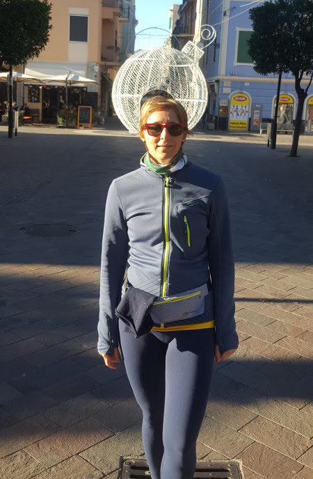
noi facciamo da dog sitter a Mirtilla e il suo super cucciolo Flash (sarà mica il cucciolo di Morgan??)
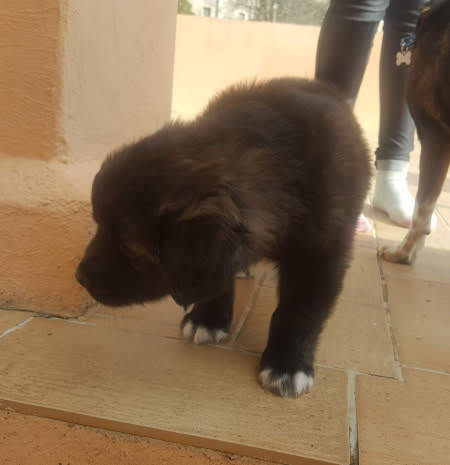
27/12 : passeggiate con Flash 
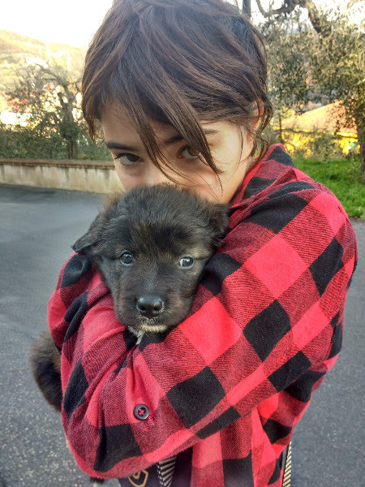
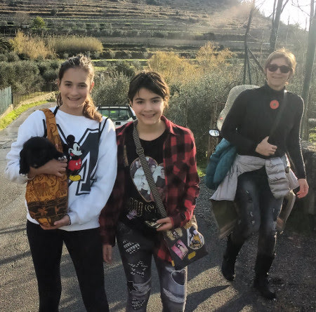
28/12: oggi andiamo in Francia a Roquebrune Cap Martin. Lasciamo la macchina e facciamo il sentiero dei doganieri a piedi fino a Monte Carlo


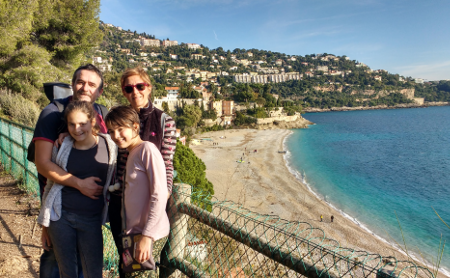
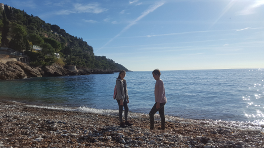
La sera passeggiata per Nizza, dove ci sono i mercatini di Natale

una bellissima fontana
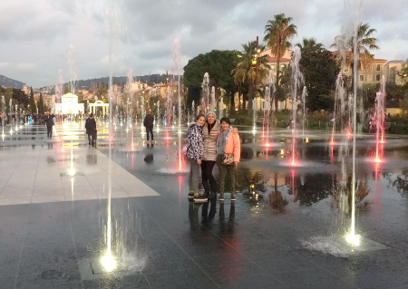
e un tramonto meraviglioso 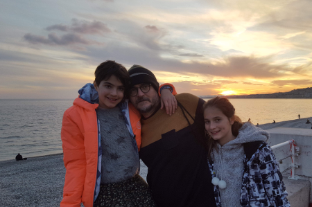

29/12 : le giornate continuano ad essere magnifiche e noi ne approfittiamo per fare delle belle passeggiate e mangiare al mare
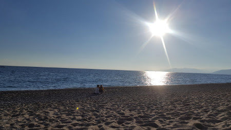

Ci raggiungono anche i Vales con il camper e trascorriamo un paio di giorni insieme!
la sera di Capodanno cenone da noi insieme a Costanza e Saverio e dei loro amici e poi tutti a sparare i botti dalla Ber
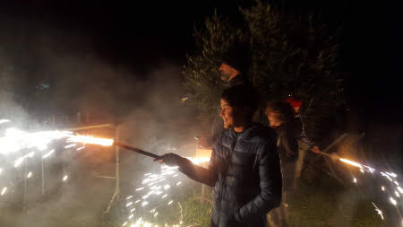
01/01/2019 : Inizia il nuovo anno con una giornata di sole
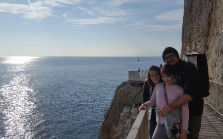
e non può mancare un tuffo (temerari!!!!)

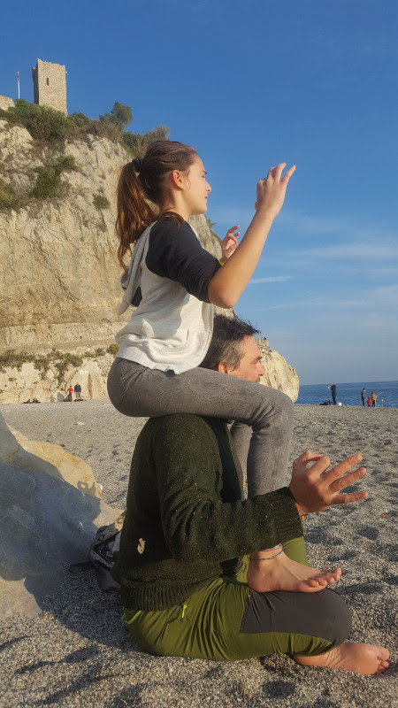

Passeggiata a Varigotti che al tramonto è ancora più affascinante!
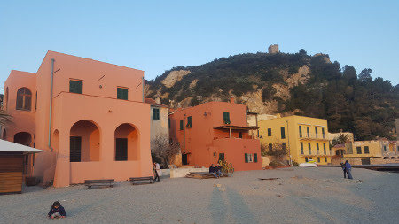
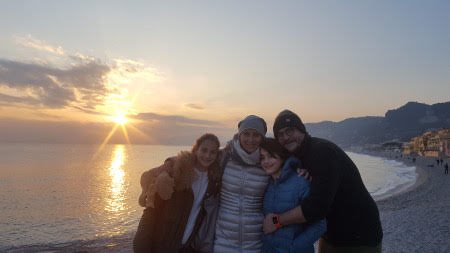
2/1 : oggi le ragazze vanno al Melogno con la zia e noi ci facciamo il trekking da Varigotti a Noli. Si parte dalla chiesetta di San Lorenzo, un affaccio stupendo sul mare e poi si prosegue sul sentiero del Pellegrino
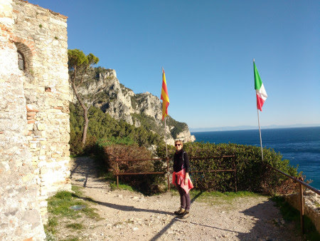
con paesaggi a strapiombo sul mare
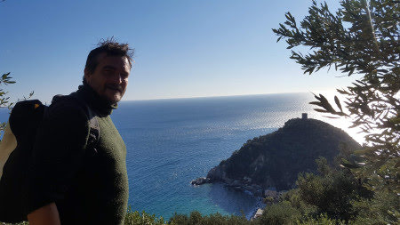
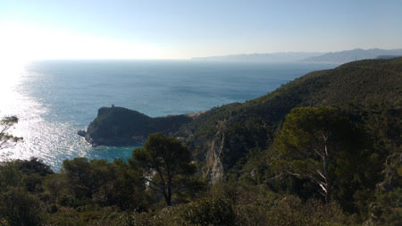
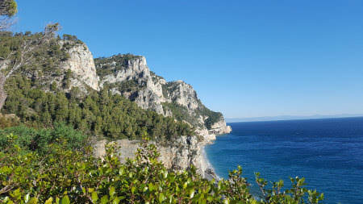
fino alla grotta dei Briganti
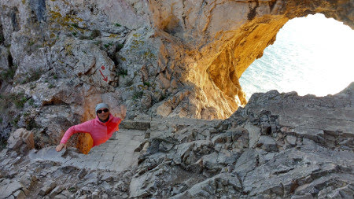
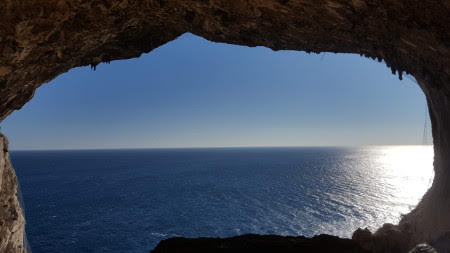
alla fine si arriva a Noli, con i suoi carruggi e il lungomare

Au revoir splendida liguria!
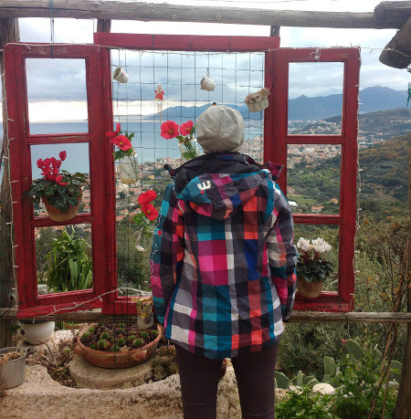

Cintura gialla
12-01-2019
Oggi facciamo il passaggio di cintura!

Evviva ho la mia nuova cintura gialla! (che è quella di zia Giorgia quando faceva Judo!)
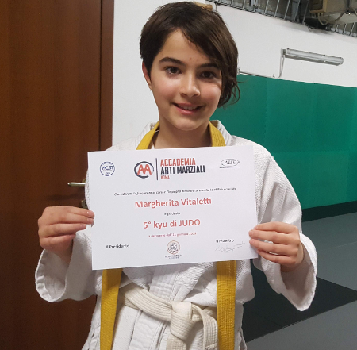
Relax
15-01-2019
Chi sulla poltrona massaggiante

chi ovunque

Torneo di tennis Roma1
27-01-2019
Siamo alla 4 tappa del torneo di tennis PIA Roma1, e con la vittoria del girone di oggi passo in 12 posizione nella graduatoria!


Fuitina per il compleanno di Massimo
11-02-2019
Ci hanno messo più di un mesetto ma alla fine M&P sono riusciti ad organizzare un we a sorpresa con Paola & Massimo per festeggiare i 50 anni di Massi!
Prima tappa Civita di bagnoregio, la città che muore .... starà pure per sgretolarsi ma è bellissima!

Passeggiata per il paesino e poi ci fermiamo in una trattoria, pranzo ottimo e seduti fuori al sole!
Nel pomeriggio andiamo al Podere di Marfisa
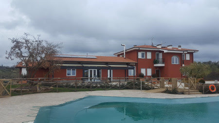
dove ci accolgono con spumante ghiacciato e fragole! (Grazie Nath!)
. Tutti nella SPA a rilassarci
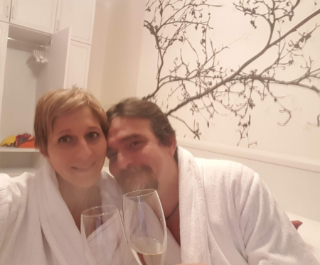
e poi un tocco di eleganza per la cena "afrodisiaca"

e non poteva mancare la torta! Auguri MASSI!!!! 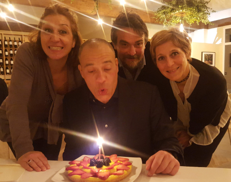
La mattina abbondante colazione e andiamo a visitare il parco naturalistico archeologico di Vulci, la città etrusco-romana con il suo basolato, la domus del criptoportio con l'inaspettato sotterraneo, il mitreo, e infine il belissimo laghetto del Pellicone
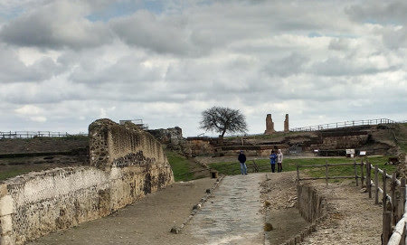

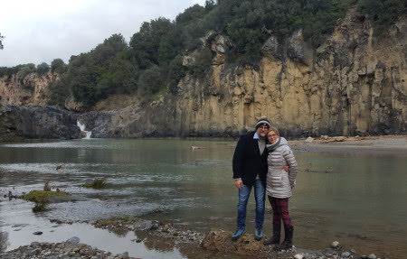
non manca nemmeno l'archeo-comunismo!!!!

E in questo bel posto c'è anche un ristorantino niente male con una vetrata panoramica sul parco!
Grazie ragazzi, sempre bello stare con voi!
San Valentino
15-02-2019
... e poi realizzi che l'amore più grande è quello che i figli hanno per te!

Tennis e lago di Martignano
18-02-2019
Oggi torneo di tennis all'Olgiata, anche se solo due giorni fa stavo con la febbre a 39.5!! E nonostante la fiacca sono riuscita a portare a casa 12 puntarelli!
Però stavolta ho la mascotte Olmetto che fa anche invasione di campo attirato dalle palline!
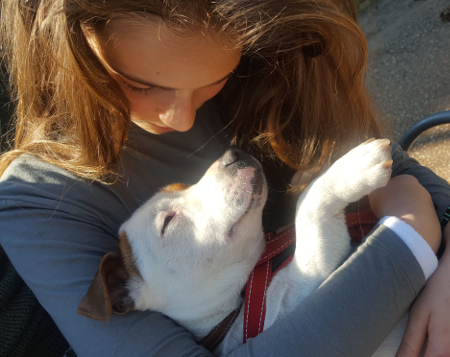
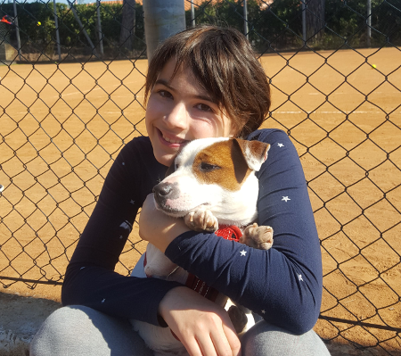
Già che siamo qui andiamo a fare due passi al Casale di Martignano, un posto bellissimo a bordo lago

Io gioco con Olmo, che si fa anche il bagno

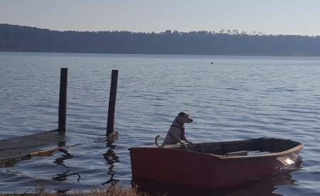
mentre Meggy va a cavallo
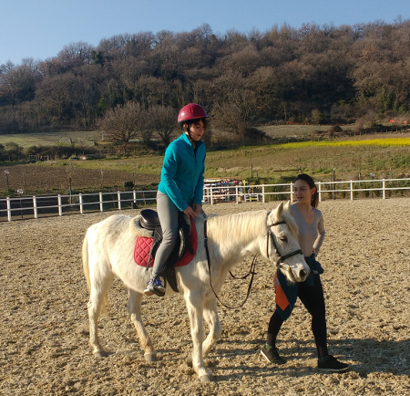
E sono 17
21-02-2019
Auguri M&P per i vostri 17 anni insieme!

Non evrete il mare ma...
25-02-2019
disse la nostra amica in quel di Verezzi.... e in effetti ...
passeggiata al mercato di Porta Portese e poi pranzo sul lungo Tevere... 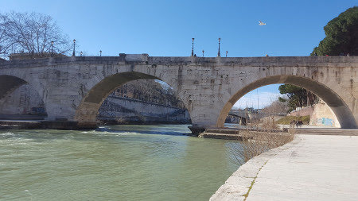

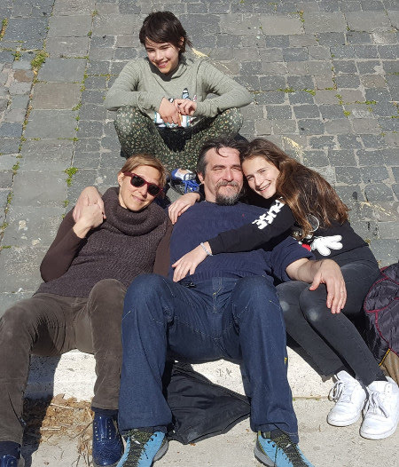
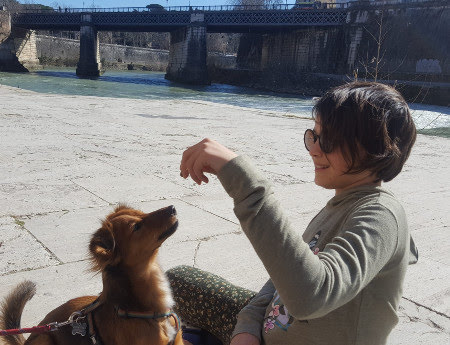
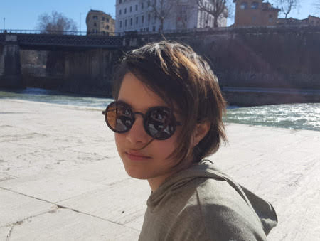
Non evrete il mare ma...
25-02-2019
disse la nostra amica in quel di Verezzi.... e in effetti ...
passeggiata al mercato di Porta Portese e poi pranzo sul lungo Tevere...
Auguri nonno Mario
04-03-2019
Per il compleanno di nonno Mario una bella festa in campagna con un pò di amici e il primo tentativo di peka di agnello!!
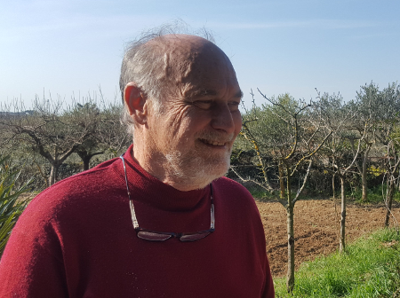

le ragazze giocano e torturano Olmo 
e raccolgono i finocchi

un ottimo e abbondante pranzo 
e infine la torta! 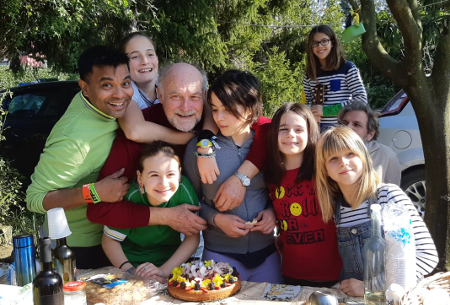
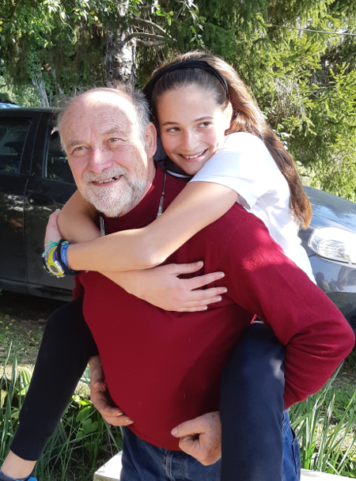
Torneo tennis: 6 tappa
17-03-2019
Oggi gioco alla giustiniana. Due partite e due belle vittorie combattute!
E con questi 20 punti sono 8 in classifica (a parimerito con la 6 e 7)
.
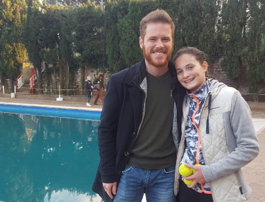
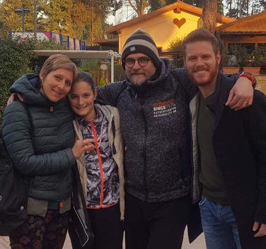
Il risveglio di primavera
21-03-2019
Si risvegliano le tartarughe e le peonie....come tutti gli anni!


Cervinia
25-03-2019
17/03 ore 00.00 finalmente si parte per la montagna! Viaggio di notte per essere a Cervinia alle 8 del mattino....con una bella sorpresa.... ziaaaaaa

Noleggiamo tutto e prendiamo la cabinovia per Plain Maison insieme a Morghi e
zia 
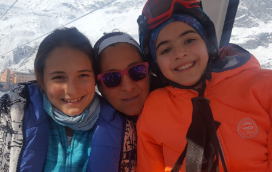
Facciamo la nostra prima sciata insieme a Silvano a Cervinia, la mitica pista 7, la Ventina, lunga 11km!

e guarda un pò .... ecco anche i Bianchin sulle piste!!!

18/03 oggi invece c'è molto vento e le piste di Cervinia e Zermatt sono chiuse. Così prendiamo la macchina e andiamo a Valtournanche insieme a Prisca (ECCOI)
. Qui essendo protetto dal vento si scia! Giornata alla scoperta delle piste, con pranzo in baita! ****
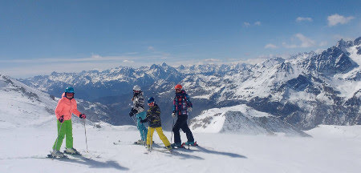
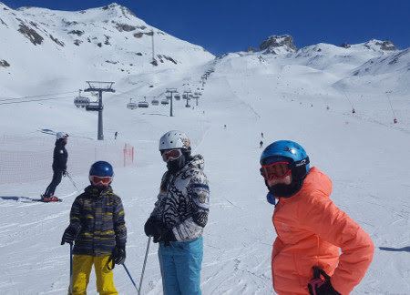
19/03 finalmente siamo tutti insieme oggi! Che bel gruppone! ****
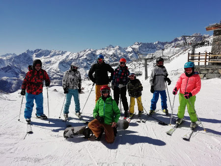
il sole, niente vento, niente nuvole, freddo (-12)
.... le piste sono tutte nostreeee
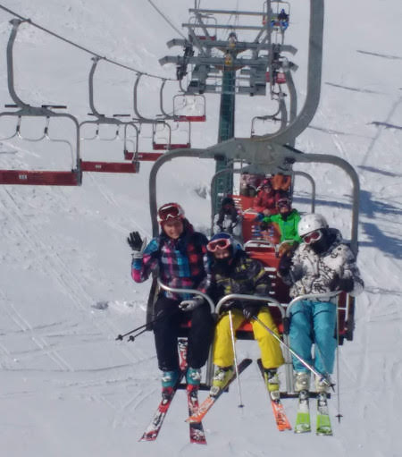
con il maestoso Cervino (4478m)
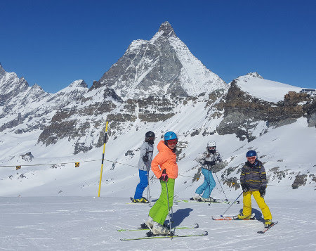
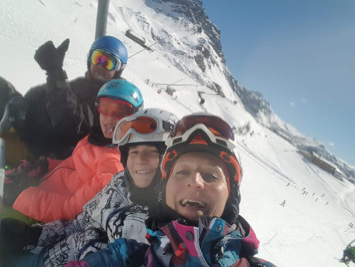
e lo splendente Plateau Rosa (3500m)
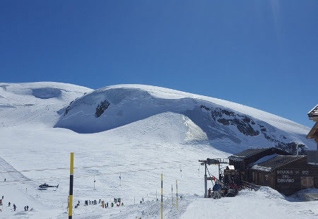
stop per panino e bombardino
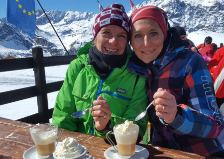

e si riparte
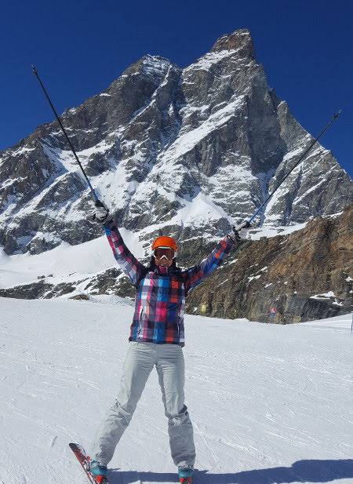
20-21/03 : : la nostra vacanza procede alla grande con tanto sole, sciate, baite, relax pomeridiani dopo-sci e serate tranquille a casa!
anche qualche birretta!!! :D

come stanca questa vacanza!!
22/03 : i Bianchin ripartono (sob)
e mati e papo prendono lo snowboard!
a pranzo ci fermiamo nella baita super chic di Plan Torrette, per una polenta e un pò di belle foto

23/03 : il nostro ultimo giorno....si va a Zermatt, in Svizzera!
Il cervino visto da qui è ancora più bello!

le piste sono larghissime e poco affollate, arriviamo fino agli chalet in legno
e non può mancare la sosta al villaggio di Igloo

e il bar fashion con i cuscinoni!


prendiamo anche il trenino a cremagliera della fine dell'800 che porta in cima al Gornergrat (3130m)
, la seconda più alta d'Europa
Aurevoir bellissime montagne!
Compleanni di M&P
27-03-2019


Auguri papà :)
E finalmente un bel sole che ci porta dritti dritti al mare!


e poi il compleanno di Mamish

Auguri nonno Gianni!
07-04-2019
Un augurio speciale da Meggy per nonno

e poi tutti a pranzo in un bellissimo locale molto fashion per il brunch....Momo Republic!


Roma in bici
14-04-2019 Bellissima giornata di primavera e ce ne andiamo in giro in bici con Meggy
Da casa, Caracalla, Giardino degli Aranci, Colosseo e ritorno!


Pasqua con zia e Morgan
22-04-2019 Eccoli....finalmente a Roma!
Andiamo tutti insieme a fare una gita al castello di Torre Alfina

e poi il bosco del Sasseto con una bravissima guida


e poi Pasqua tutti insieme in campagna

ci sono anche Olmo e Chloe

E Pasquetta al lago di Martignano


Ponte del 25 aprile a Sabaudia
27-04-2019 Le previsioni sono stupende e allora si carica Ronzinante e si scappa a Sabaudia!
25 - Con un pò di pazienza montiamo il catamarano gonfiabile....l'ultimo giochino di papà!

.... un paio d'ore dopo ....

..... il varo!!!! Anvedi come va con il vento!!!
Esausti dalla giornata dormiamo in riva al mare.
26 - Mentre pigramente facciamo colazione in camper ...sorpresa.....lo
zio Nospa....passava da queste parti!!!


Qualche altra veleggiata ... anche se il tempo è un pò peggiorato!


27 - Il sole splende e abbiamo deciso di fare il trekking sul monte Circeo!
Si parte la mattina

il panorama è stupendo a 360 gradi!


e finalmente raggiungiamo la cima! Bravissimi tutti!

Pausa panino e poi discesa.....ripidissima fino a Torre Paola .... daje de quadricipiti!!!

Bellissimo we!

Festival d'Oriente
05-05-2019 Un salto a vedere questa colorata e divertente manifestazione!
Si passa dall'ovest


all' est passando per il centro america per bere una pinacolada


E infine un bel tatuaggio per tutte!


Gare di Atletica
10-05-2019 La scuola Mommsen si qualifica alle regionali dei giochi della
gioventù.
Mati partecipa per il salto in alto e Flavio per la staffetta!

(un paio di salti di allenamento)
e poi alle gare a Ostia


Auguri Nunzietto!
11-05-2019 Per festeggiare Nunzio andiamo tutti in campagna dai genitori di Teresa
Che bella giornata nel verde e nella pace, ottimo cibo e musica!


Paintball per il compleanno di Evan
24-05-2019 Una festa a sorpresa per gli 11 anni di Evan .... andiamo al paintball! La vestizione....e che guerra di palline colorate sia!!!


E poi tutti insieme per la torta

Females
27-05-2019 Una famiglia di femmine :)


Saggio di violino
03-06-2019 Maty e il saggio di violino della 2 media

Meggy e la fine della 5 elementare
06-06-2019 Siamo a giugno.... la 5 elementare sta finendo... e nonostante il campo scuola non l'abbiano fatto sono più uniti che mai!

Si fanno le ultime gite


le ultime ricerche con le compagne


il saggio di fine anno ... super emozionante per i ragazzi e super commovente per genitori e maestre!

e infine una stupenda recita "La nostra Odissea". Grande Meggy che interpreta la maga Circe con i maialini

ma bravi tutti! Bellissimi costumi, scenografie e dialoghi divertenti!


e poi tutti in Caffa a festeggiare e salutare le maestre Alessandra, Francesca e Roberta.


E l'ultimo giorno di scuola tutti in Caffa a farci i gavettoni!

La classe di Mati li fa nel nostro giardino ... ancora in fase di ripristino dopo i lavori ai balconi!


Isa a Roma
09-06-2019
Finita la scuola ci raggiungono Isa, Carolina e Codi per stare qualche giorno
insieme.
Qualche passeggiata romana


e poi ..... sorpresa ....a ZOOMarine

una bella giornata nel parco tra animali


giochi e scivoli!
Davvero una bella giornata!
Weekend in moto M&P
17-06-2019 Le ragazze sono partite e noi ... bhè ci facciamo prestare una signora moto e si parte per un bel giro sulla costa del basso lazio.


Spiaggia dei 100 scalini o dell'Arenauta ... con tappa al baretto prima delle scale "Ristoro Arenauta" a rifocillarci di tielle e mozzarella di bufala!
C'è anche il campionato di dragon boat e visitiamo una grotta.

La sera passeggiata per Gaeta vecchia

e cena da "Mare fritto e isole comprese"... consiglio ottimo!

Troviamo un B&B per dormire nell'entroterra, ad . Che relax!

Si riparte alla volta del mare .... il tratto a nord di Gaeta è tutto insenature ....

ci fermiamo per un bagno nella spiaggia di Fontania con le vasche romane che affiorano.

Poi ci spostiamo verso Sperlonga. Pranzo di pesce al ristorante "L'angolo"...anche questo consigliato, sobito sotto la rocca. Passeggiata fino al paese per smaltire il pranzo!


Bellissimo we ... grazie a Giò per i consigli e a Fede per la moto!
C'è da spostare una barca ....
23-06-2019 Da bravo skipper papo si offre di aiutare a spostare una barca da Anzio ad Ostia.

Bellissimo stare in mare al tramonto

Poi si alza vento forte e cala la notte ..... mamma stecchita!

Un saluto a nonna nonna
06-07-2019 Qualche giorno nelle Marche e un saluto alla mitica nonna nonna Maria!


Timoniere Flavio :)
06-07-2019 Oggi usciamo con la barca di Roberta insieme a Flavio e Paola


50 volte Paolett in Sicilia
20-07-2019
La nostra Paoletta compie 50 anni e ci regala una bellissima settimana in
Sicilia insieme a "Li Tuzzi".
13/07 : Noi partiamo in aereo e appena atterrati un arancino, una granita e una scappata a salutare Annagloria


un tuffo in piscina


e poi andiamo al villino di Fontane Bianche.
14/07 : Eccoci tutti insieme... partita a carte e poi bagno...

e per iniziare non c'è spiaggia più bella di quella del Gelsomineto


tornati a casa però ci attende una brutta sorpresa .... sono entrati i ladri e
ci hanno rubato computer, macchine fotografiche e qualche gioiello :(
Ma non ci facciamo scoraggiare ... siamo solo all'inizio della nostra
bellissima vacanza!
15/07: oggi visitiamo la splendida città barocca di Noto.
La cattedrale, i balconcini, il riverbero della luce sulla pietra bianca .... la briosche con il gelato :D


per pranzo ci spostiamo nel delizioso paesino di Marzamemi, famoso per la tonnara

fritturina di pesce e relax


16/07 : Riserva di Vendicari. Bagno e tartaruga di sabbia alla spiaggia della tonnara

e poi passeggiata per la riserva lungo la costa


dove ci aspettano i cavalloni di Cala Mosche ...e un inizio di temporale!!


per fortuna troviamo riparo in un ristoro tra le piante di arance e finalmente torna il sole ...in attesa che i papà ci recuperino!

La serata la passiamo a Siracusa, con una passeggiata all'isola di Ortigia


17/07 : Oggi brutto tempo. Rimaniamo nei dintorni di casa.
18/07: Auguri Paola!!! Per il tuo compleanno una stupenda escursione
sull'Etna con l'associazione EtnaExcursion e le nostre bravissime guide, la
bella e la bestia, Piera e Paolo. Prima però abbondante colazione!
Si sale verso il cordone di crateri spenti della colata di 18 anni fa.


E la discesa? Un ghiaione di pietruzze e polvere lavica ... tutto di corsa...che figata!
Tappa per la visita alle grotte di scorrimento lavico


e infine la torta e le candeline ....

e un tuffo in piscina ... a casa di Annagloria

19/07 Spiaggia del Gelsomineto....scogliera e tuffi!


Bellissima vacanza, grazie Paola per la scelta e a tutti per la compagnia!!
Per concludere.... il pane cunzato al curvone....

Brallo e mare
21-07-2019 C'è chi va ad allenarsi al centro federale di tennis al Brallo e chi se la spassa al mare!


Torre Astura
27-07-2019 Per un weekend da soli in camper scegliamo la nostra amata Sabaudia...nonostante il tempo non sia bellissimo


e poi una biciclettata nella splendita torre Astura


Uomini e lupi in val Gesso
08-08-2019 Siccome ci stavamo rilassando troppo ....


papà ha deciso di portarci sulle Alpi Marittime, in val Gesso, a trovare la Becchettys family!

Abbiamo visitato il centro "Uomini e Lupi" che in un grande recinto ospita alcuni lupi non più in grado di vivere in natura


Ci siamo divertiti con delle bellissime passeggiate


Amici e famiglia
10-08-2019


Loire a velò
28-08-2019
17/08 si parte dalla Liguria verso la Francia. Prima tappa a Lione per sgranchirci le gambe e le zampe!


18/08 In serata arriviamo a Orleans per incontrarci con Michele e iniziare il nostro viaggio.


19/08 Orleans - Meung-sur-Loire (23Km)
Parcheggio di macchina e camper, noleggio e montaggio bici (con imprevisto perdita del bullone della ruota) ma alla fine si parte! Iniziamo subito con l'attraversamento delle Loira per andare sulla sponda sud e iniziare la nostra ciclabile "Loire a Velò"


Acclimatazione....pochi Km ma birretta e ralax alla meta!

20/08 Meung - Chambord - Blois (54Km)
Si pedala lungo il fiume enorme e silenzioso


incontrando posti buffi come questo punto ristoro con delle sculture originalissime


... e si fanno anche cose buffe :)

con una piccola deviazione arriviamo al maestoso castello di Chambord


infine al tramonto raggiungiamo Blois ...con il suo ponte sul fiume


e ci concediamo una ottima cena con buon vino!

21/08 Blois - Chaumont-sur-Loire-Amboise (36km)
Passeggiata per Blois con il suo bel castello e la terrazza panoramica sul fiume


Baratti e Populonia
28-08-2019
Tornando verso casa passiamo a trovare i cugini a Populonia

e ci godiamo il tramonto nella spiaggia di Baratti

Cervia
07-09-2019
Le ragazze partono per una settimana di atletica a Cervia!
Tra allenamenti mattina e pomeriggio, serate dancing, parco acquatico, bagni Bea e David hanno proprio saputo come farli divertire!
E Mati festeggia il suo primo compleanno lontana da M&P :( ..... ma insieme a tanti amici e a Meggy!


e al ritorno.....tortina di compleanno a casa!

Torre Astura .... ultimo mare prima dell'inizio della scuola
14-09-2019
Ci regaliamo un bellissimo we con gli amici a Torre Astura prima della ripresa della routine!


Scuola 2019-2020
16-09-2019
Si ritorna a scuola, 1 e 3 media!

11 anni di Meggy!
23-09-2019
Festona in giardino con gli amici


un super salamone di cioccolata

e giochi ..... apprezzatissimo quello delle ciambelle!


Nuovi e vecchi sport
01-10-2019
Mati ricomincia con il tennis e i tornei


mentre Meggy inizia il basket
]
Romix
05-10-2019
Una volta ci si deve andare .... e pure mascherati!


WE di ottobre
13-10-2019
Questo ottobre ha fatto delle giornate stupende....e mentre papà va a vela noi ci godiamo il mare

scoattando un pò in spiaggia ....che cringe!


E festeggiamo anche l'anniversario dei nonni!


Halloween 2019
31-10-2019
Come sempre non possiamo non festeggiare Halloween!! Si prepara la casa


e i dolcetti mostruosi


e infine le streghette pronte ad andare in giro a fare "trick or treat"


... e anche le mamme!!!

Passeggiate romane
02-11-2019
Roma è sempre bellissima e passeggiare tutti insieme non ha prezzo!


Gli artigiani
10-11-2019
.... e con un amico falegname....vuoi che papà non imparasse anche a lavorare il legno!!
LA CHITARRA


LA SCRIVANIA DI MATI


Impariamo a cucinare siciliano
08-12-2019
.... grazie a nonna Lilli che ci insegna a fare gli involtini di pesce spada


e le scacciate


Mercatino di Natale al castello di S. Severa
15-12-2019
Una passeggiata al mare per vedere il mercatino nel castello


La vigilia di Natale
24-12-2019
.... siamo tutti a casa di Cicetta e Manu!


Passeggiata al centro
27-12-2019
La passeggiata a piazza Navona sotto Natale non può mancare e soprattutto la mela caramellata.


Stavolta abbiamo anche Chloe.
Nonno Mario in ospedale
29-12-2019
Siamo abituate a questi 4 nonni forti e in salute....ma ogni tanto succede qualcosa :(
Nonno Mario è stato ricoverato nelle Marche per una brutta polmonite/pleurite....ma dopo due interventi è tornato in forma come sempre!


Grande nonno! Ti vogliamo bene!
1